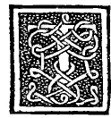

CAPITEL LIV¶
Vom ebenen, vollen oder hohlen Zweiundsiebzigflächner.

Unter diesen, erhabener Herzog, ist passenderweise der Körper zu stellen, der Zweiundsiebzigflächner genannt wird, den unser Megaräer Philosoph in der vierzehnten seines zwölften genau beschreibt. Obwohl dieser seine Grenzflächen eben, eckig, von Winkeln begrenzt und ungleichförmig hat, so kann man nicht sagen, dass er von irgend einem der regulären Körper abhänge oder herzuleiten sei, sondern er bildet und erzeugt sich allein, wie es am genannten Orte unser Philosoph zeigt, mittelst des Dodekagons, d. h. des gleichseitigen ZwÖlfecks. Und von seinen vorgenannten Flächen sind 48 vierseitig ungleichseitig und ungleichwinkhg, und sie haben nur die zwei entgegengesetzten Seiten nach den beiden Polen oder, wir wollen sagen, der Spitze zu verlängert und unter sich gleich.
Und seine andern 24 Grenzflächen sind dreieckig und gleichermassen ungleichseitig. Und von diesen umgeben zwölf die eine dieser Spitzen und zwölf die andere. Und jede von ihnen hat zwei gleiche Seiten, nämlich die, welche nach dem Punkte des untern und obern Pols hingehen. Auch aus diesem wird man immer seinen erhöhten auf dieselbe Art, wie es bei den andern geschehen, bilden können;i) aber in Folge der Ungleichförmigkeit seiner Grenzflächen wird seine Kenntniss schwer sein, wenn sie auch dem Auge nicht wenig Schönheit darbieten möchte.
Und es würden m demselben der Anzahl seiner 72 Grenzflächen entsprechend 72 Pyramiden entstehen, von welchen Pyramiden die Grundflächen dieselben wie bei jenem sein würden, und ausserdem jener innerhalb gedachte, dessen erhöhte Gestalt ich mich nicht bemüht habe, unter der vorhandenen materiell darzustellen, um auch dem Leser sein ■Theil zu überlassen, auf dessen Ingenium ich mich verlasse. Und dieser Zweiundsiebzigflächner wird von den Architekten in ihren Anordnungen der Gebäude viel benutzt, insofern er eine besonders geeignete Form ist, besonders, wo es nöthig ist, Tribünen oder sonstige Gewölbe, oder wir wollen sagen, Himmel herzustellen.
Und ungeachtet bei den gesagten Gebäuden nicht immer genau soviel Seitenflächen genommen werden, so richten sie sich nach jenem Vorbild, indem man ihn auf alle Art viertheilt, Dies scheint insofern wenigstens nicht zutreffend und einer Modifi cation zu bedürfen, als die Längen der Seitenkanten ihrer Pyramiden nicht mehr den bisherigen Anforderungen entsprechen können, indem ihre Grundflachen selbst keine gleichseitigen Figuren sind. dritttheilt je nach dem Ort und Lage, wo man solches Gebäude zu errichten beabsichtigt.
Je nach deren Geeignetheit finden sie sich sehr häufig an verschiedenen Stellen angeordnet und gebaut, wie es bei dem unschätzbaren antiken Pantheontempel und heutigen Tages von den Christen in der Capitale der Welt die Rotonda genannt sich bekundet, der mit so viel eifriger Industrie und Beobachtung der Proportionen ausgeführt wurde, dass das Licht durch ein einziges kleines Loch in seine offen gelassene Spitze den ganzen Bau glänzend und leuchtend macht. Ich unterlasse es, von vielen andern berühmten und gepriesenen Städten, wie Florenz, Venedig, Padua, Neapel und Bologna zu reden, in denen viele Gebäude, heilige wie profane, mögen es kleine oder grosse sein nach dem Spiegel dieses gemacht sind.
Auch hier in Ihrem Mailand, im würdigen Heiligthum von San Scetro, bildet die schmuckvolle Kapelle einen von diesem i), abgetrennten und zugleich vorbehaltlich von etwas Convexem an die Mauer gelehnten Theil und in jeder ihrer Grundflächen ist eine grosse Rose damit verbunden, die sie schrnuckvoll macht. Und in Ihrem geweihten und heiligsten Tempel der Gnaden sind seine Tribüne am ersten Altar und die an den Seiten schon nichts anderes als ein Theil nach Art Dieses, i) indem zu seinen Grundflächen jene zu grösserer Zierde noch hinzugefügt worden.
Und obwohl viele bauen und die Formen nach ihrer Willkür herbeiziehen, da sie weder von Vitruv mehr Kenntniss haben, wie von andern Architekten, so bedienen sie sich gleichwohl der Kunst, obgleich sie es nicht wissen, wie von den rohen Bauern Aristoteles sagt, dass sie beunruhigen und wissen nicht, dass sie Furcht erregen. Ebenso bedienen sich diese der Kunst und wissen nicht, dass sie sie benutzen. Auch der Schneider und der Schuster benutzen die Geometrie und wissen nicht, was sie sei; wie auch Maurer, Tischler, Handwerker und alle Künstler, die Maasse und Proportionen anwenden, ohne es zu wissen. Denn wie früher gesagt, besteht alles aus Zahl, Gewicht und Maass.
Aber was sollen wir von den modernen Gebäuden bezüglich ihrer Art sagen, nach mannigfachen und verschiedenen Mustern angelegt und geordnet, welche, da sie manchmal dem Auge Schönheit bieten, indem sie klein sind, nachher bei der Bauausführung das Gewicht nicht ertragen. Und weit entfernt auf tausend Jahre zu kommen, brechen sie vielmehr schon im dritten zusammen. Und wegen ihres schlecht Verstandenseins machen sie mehr Reparatur, als Baukosten.
Die sich Architekten nennen und nie die Deckel des hierin ausgezeichneten Bandes unseres höchst würdigen Architekten und grossen Mathematikers Vitruv gesehen haben, der über Architektur mit den wichtigsten Lehren für jeden Bau geschrieben und wer davon abweicht, gräbt im Wasser und baut auf Sand, ruinirt eher die Kunst; die, Architekten genannt und nicht den Unterschied des Punktes zur Linie kennen: wie sollten sie jenen der Winkel kennen, ohne welche es nicht möglich ist, gut zu bauen, wie es nach des vorerwähnten Vitruv’s Aussage der grosse Jubel und höchste Freude bekundet, welche Pythagoras hatte, als er mit sicherer Wissenschaft das wahre Verhältniss von den zwei graden Linien gefunden, welche den reciiten Winkel genau nach dem Loth enthalten, aus welchem Grunde er, indem er den Göttern dieserhalb ein grosses Opfer und Fest feierte, 100 Ochsen schlachtete, und dieser Winkel ist von solcher Vorzüglichkeit, dass er sich niemals ändern kann, und mit andern Namen nennen ihn die vollkommenen Geometer auch „Winkel der Gerechtigkeit”, weil es ohne seine Kenntniss nicht möglich, bei irgend welcher unserer Handlungen Gutes vom Schlechten zu unterscheiden, noch kann man je ohne ihn gewisses Maass auf irgend eine Art liefern.
Daher scheint es den modernen Stümpern, als sei bei ihren Gebäuden Nichts gethan, wenn sie anstatt der richtigen und nothwendigen antiken Norm nicht irgend eine Inconvenienz ihrer Thorheiten einschieben, indem sie diejenigen tadeln (auch solcher finden sich einige), welche sie auf das richtige und antike Maass zurückführen wollen. Und jene sind es, die sich an unsern mathematischen Disciplinen erfreuen, indem sie dem wahren Führer bei allen Bauten in den Werken Vitruv’s folgen, von welchen abweichend man sieht, wie dann unsere Gebäude stehen, göttliche wie profane, bald krumm, bald doppelt gekrümmt.
Und deswegen ist das Wort Euer Hoheit und seine Wirkung sehr angebracht, hinsichtlich der Stadt, dass alles Krumme auf den Schutthaufen (geworfen werden solle), und wenn Sie das bereits Begonnene tortsetzen, werden Sie Ihr Mailand aus seinem absehenlichen und unpassenden Eindruck in Kurzem zu nicht geringerer Schönheit als Florenz überführen, indem Sie die Urheber davon entfernen, denn in Wahrheit verstehten Sie mehr davon im Schlaf, als diese mit tausend Augen sehend, wie dasselbe Ihr naher Verwandter, der erlauchte Herzog von Urbino, bei dem bewundernswerthen Bau seines würdigen vorerwähnten Palastes beweist.
Und dieses möge mit Verlaub derer, welche das übel nehmen könnten, was bisher zu ihrer Kenntlichmachung gesagt worden und auch bezüglich des genannten Körpers zum vorliegenden Zwecke genügen.